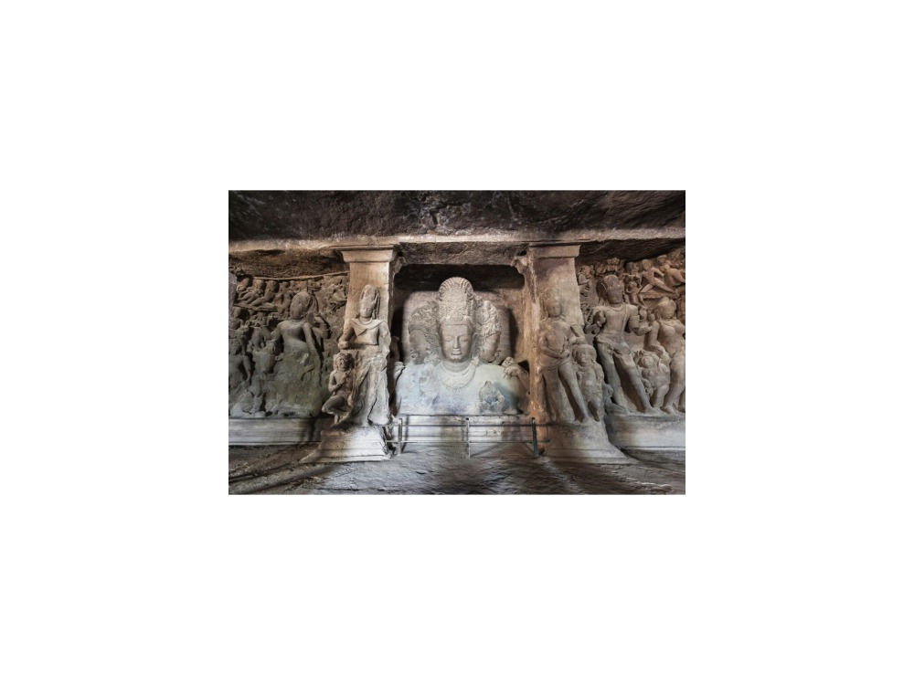
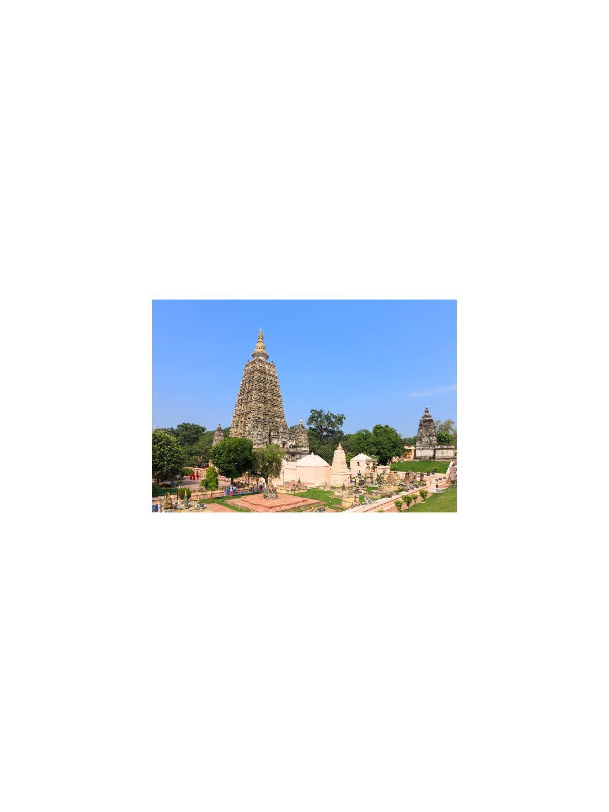

Индия, созданная специально для вас.
Наследие, дикая природа и святые места — с частным гидом, аккредитованным правительством Индии, с опытом более двадцати лет, на русском или английском.
Авторские маршруты
Шесть программ, показывающих разнообразие Индии — от Золотого треугольника до Гималаев.
 4 дня
4 дня4 дня: Золотой треугольник экспресс — Дели, Джайпур и Агра
Полный Золотой треугольник за четыре дня: от переулков Старого Дели до фортов Джайпура, Фатехпур-Сикри и рассвета у Тадж-Махала.
Подробнее → 8 дней
8 дней8 дней: крепости Раджастана — от Дели до Удайпура
Великие горные форты и озёра Раджастана от Джайпура до Джодхпура и Удайпура, с Кумбхалгархом и Читторгархом по пути.
Подробнее → 8 дней
8 дней8 дней: гималайская узкоколейка — Шимла, долина Куллу и Мак-Леод Гандж
Узкоколейка ЮНЕСКО, колониальная Шимла, долина Куллу и тибетские холмы Мак-Леод Гандж за восемь дней.
Подробнее →
9 дней9 дней: пещеры и цитадели Декана — Элефанта, Эллора, Аджанта и Даулатабад
Аджанта, Эллора, Элефанта и Даулатабад: девять дней среди самых выдающихся скальных пещер и фортов Декана.
Подробнее → 4 дня
4 дня4 дня: Каджурахо и Варанаси — храмы, тигры и священный Ганг
Храмы Каджурахо, сафари в Панне и Ганг в Варанаси: от скульптуры до ритуала за четыре дня.
Подробнее → 6 дней
6 дней6 дней: Золотой треугольник и дикая природа — до Бхаратпура
Золотой треугольник в сочетании с заповедником Кеоладео — для тех, кто хочет увидеть и наследие, и птиц.
Подробнее →Куда вы хотите поехать?
Путеводители по направлениям: памятники и маршруты, которые их посещают.

Дели
Столица Индии, где бок о бок стоят наследие Могольской империи, Делийского султаната и колониальной эпохи.

Агра и Фатехпур-Сикри
Тадж-Махал, форт Агры, Фатехпур-Сикри и мавзолеи Акбара и Итимад-уд-Даулы.
Джайпур и Абханери
Розовый город, его горные форты и дворцы и древний ступенчатый колодец Чанд-Баори.

Каджурахо, Орчха и Гвалиор
Храмы Каджурахо (ЮНЕСКО), заповедник Панна и дворцы Орчхи и Гвалиора.

Варанаси и Сарнатх
Гхаты на Ганге, вечерняя арти и Сарнатх, где Будда произнёс первую проповедь.

Бодх-Гая и буддийский маршрут
Бодх-Гая, Гая, Раджгир, Наланда и Патна — древний паломнический маршрут Бихара.
Почему путешествовать частно
Ваш темп
Никакого группового графика. Мы задерживаемся там, где вам интересно, и пропускаем то, что неинтересно.
Один гид от начала до конца
Один и тот же эксперт рядом с вами всё путешествие, с личным автомобилем и водителем.
На вашем языке
Свободный русский и английский; образование в области права и русской литературы определяет то, как рассказывается история Индии.
Как это работает
Запрос
Расскажите об интересах и датах.
Предложение
Индивидуальная программа и цена в течение 24 часов.
Путешествие
Ваш личный гид, автомобиль и водитель — в вашем темпе.

Намасте, меня зовут Викрамджит Сингх
Более двадцати лет я вожу путешественников со всего мира по великим памятникам, храмам и диким уголкам Индии. Каждый маршрут, который я составляю, — частный, неторопливый и построен вокруг вас.
Моя историяРасскажите о датах и интересах
Я лично подготовлю программу и расчёт стоимости в течение 24 часов. Никаких групп и шаблонов.